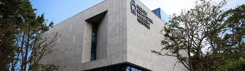
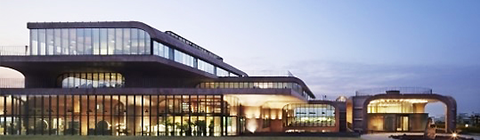
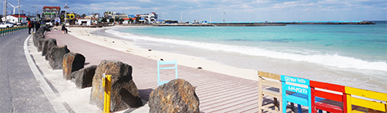
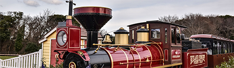

<html>
<body>
<head>
<meta charset="UTF-8">
</head>
<a href=index.html></a>

<a href=sub2.html><p style="position:absolute; left:650; top:30; font-family:sans-serif; color:black">여행계획</p></a>
<a href=sub4.html><p style="position:absolute; left:750; top:30; font-family:sans-serif; color:black">맛집검색</p></a>
<a href=sub3.html><p style="position:absolute; left:865; top:30; font-family:sans-serif; color:black">게시판</p></a>
<a href=sub5.html><p style="position:absolute; left:950; top:30; font-family:sans-serif; color:black">마이페이지</p></a>

</body>

<p style="position:absolute; left:120; top:150; font-family:sans-serif; color:black; font-size:20pt">제주도의 추천 여행지를 보여드립니다.</p></a>
</a>
<p style="position:absolute; left:610; top:220; font-family:sans-serif; color:black; font-size:20pt">넥슨컴퓨터박물관</p></a>
<p id="text"; style="position:absolute; left:610; top:270; font-family:sans-serif; color:black; font-size:15pt">넥슨 컴퓨터 박물관은 게임회사 넥슨이 만든 컴퓨터 관련 박물관으로 컴퓨터와 게임의 역사를 만나볼 수 있다.<br> 스티브 잡스가 맨 처음 만든 컴퓨터 APPLE1 을 비롯한 첫 세대 퍼스날 컴퓨터부터,<br>역사 속의 모니터, 키보드 등 컴퓨터 부속부품을 만나 볼 수 있다.<br>레이저를 이용한 빔 타자기와 VR 등 아직은 보편화 되지 않은 새로운 컴퓨터 용품을 체험해 보는 재미도 있다.</p></a>
</a>
<p style="position:absolute; left:610; top:450; font-family:sans-serif; color:black; font-size:20pt">카카오 본사 (스페이스닷원)</p></a>
<p id="text"; style="position:absolute; left:610; top:500; font-family:sans-serif; color:black; font-size:15pt">원래 다음 본사였던 이곳은 카카오와 합병한 후 사명을 ‘카카오’로 변경하였다.<br>인터넷 한메일 서비스로 많은 네티즌 팬을 확보했던 회사는<br>이제 다양한 모바일 서비스로 스마트폰 이용자와 가까이 있다.<br>회사의 역사와 제주 이전 스토리, 사옥을 둘러보는 단체 방문 프로그램을 진행하고 있으며,<br>개인 및 30명 이하 소규모 그룹은 별도 신청 없이 로비 및 외부 공간을 둘러볼 수 있다.</p></a>
</a>
<p style="position:absolute; left:610; top:680; font-family:sans-serif; color:black; font-size:20pt">월정리해변</p></a>
<p id="text"; style="position:absolute; left:610; top:730; font-family:sans-serif; color:black; font-size:15pt">제주도의 동쪽에 위치하고 있는 마을인 '월정리'는 '달이 머문다'는 뜻의 이름을 가진 서정적인 풍경의 마을이다.<br>아름다운 에메랄드빛 바다가 한 폭의 그림처럼 펼쳐져 있고, 그 위에는 밝은 달이 비친다.<br>풍경화처럼 아름다운 월정리 해변을 방문한 여행객들은 저마다 다양한 방법으로 해변의 경치를 만끽한다.<br>특히 수심이 얕은 편이기 때문에 아이를 동반한 가족들이 물놀이를 즐기기 좋다.
</p></a>
</a>
<p style="position:absolute; left:610; top:910; font-family:sans-serif; color:black; font-size:20pt">에코랜드 테마파크 </p></a>
<p id="text"; style="position:absolute; left:610; top:960; font-family:sans-serif; color:black; font-size:15pt">에코랜드는 1800년대 증기기관차인 볼드윈 기종 모델의 기차를 타고, 약 4.5km 거리의 곶자왈을 체험하는 테마파크이다.<br>에코랜드는 사계절 내내 다른 분위기를 띄고 있는데, 봄과 여름에는 푸른 녹음과 따뜻한 햇살을, 가을에는 알록달록 피어난 코스모스와 억새 물결을, 그리고 겨울에는 새하얀 설경을 볼 수 있다.<br><br><br><br>
</p></a>

<script>
var text = document.querySelector('text');
var result = text.value.replace(/(\n|\r\n)/g, '<br>');

console.log(result);
</script>


</html>